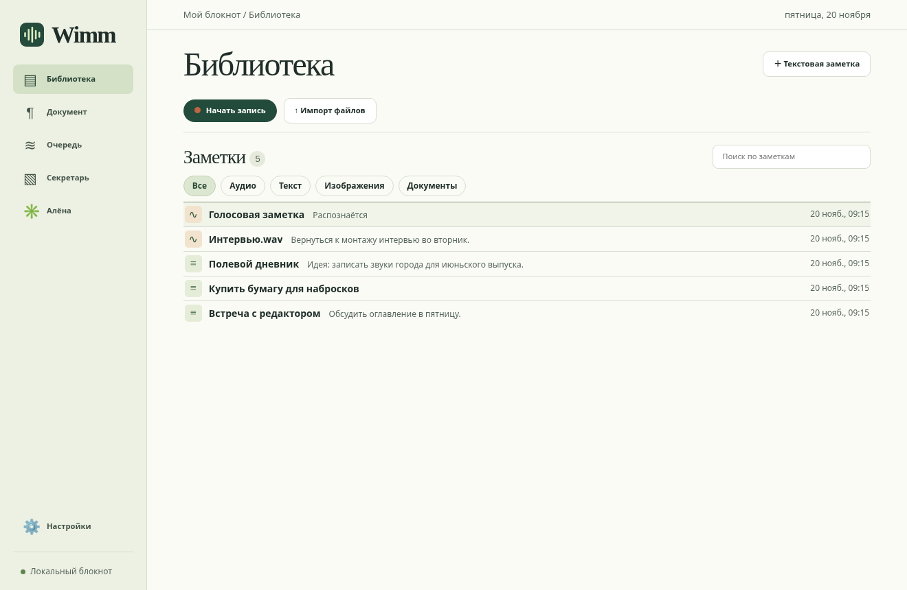

Wimm для Chrome
Записывайте мысли голосом, сохраняйте снимки вкладок и ищите заметки вместе с Алёной. Секретарь Claude собирает из выбранных источников личный документ.
Установка из ZIP. Распакуйте архив в постоянную папку. Включите режим разработчика на chrome://extensions и выберите «Загрузить распакованное расширение». Эту установку можно обновлять вручную, заменяя содержимое той же папки.
Автообновления в Chrome на macOS и Windows доступны для установок из Chrome Web Store. Первая публикация в магазине ожидается.

Конфиденциальность